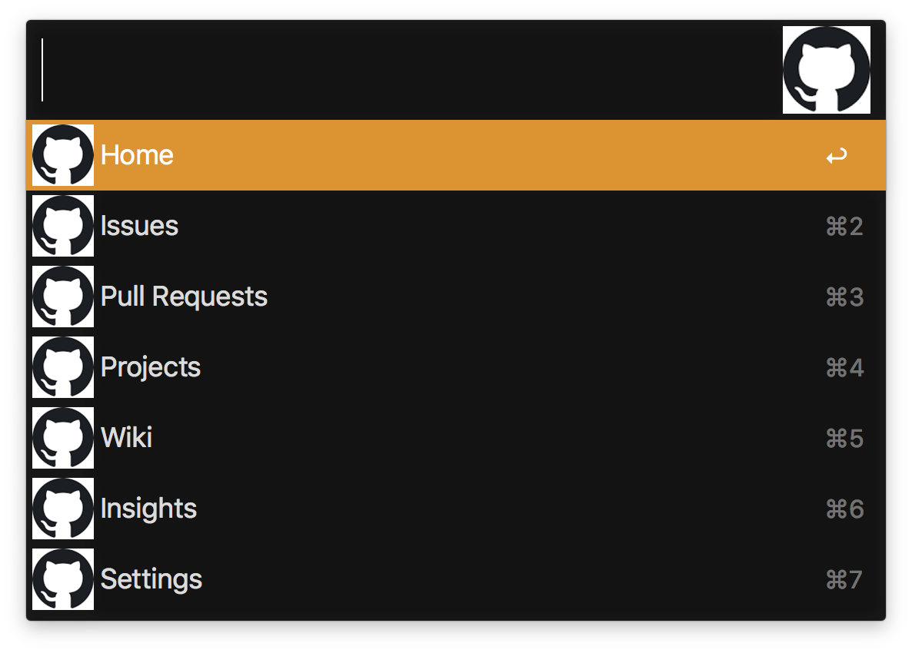

Alfred is an award-winning app for macOS which boosts your efficiency with hotkeys, keywords, text expansion and more. Search your Mac and the web, and be more productive with custom actions to control your Mac.
Alfred's goal is simple: let you do whatever it is you want to do, better and faster.
Download it from their website at alfredapp.com
It's free*!
You'll need a paid add-on called the Powerpack for a lot of the features in this talk.
I think so! But I'm biased.
The powerpack enables way more useful functionality.
Event-driven automation, backed by Alfred.
Trigger things with hotkeys or Alfred Keywords.
Built with filters and actions.
Alfred can listen for key-combinations and use them to start workflows.
Alfred can also respond to keywords typed into the search bar.
Present a list of items for Alfred to display.
Can optionally be bound to a keyword
Two variants, Script and List.
Typically an end to the workflow.
Can be lots of things!
Like list filters, but they invoke a script in order to get a list of items.
They can update dynamically as you type.
An Alfred community member created alfred-workflow, a Python library.
The alfred-workflow package is useful for scripts and script filters, but a script filter is a great place to start!